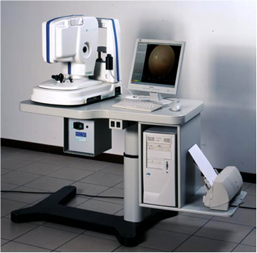
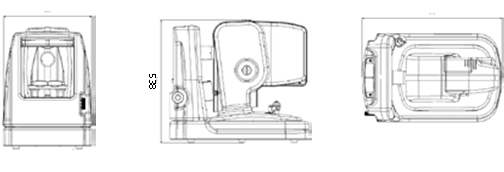

Máy đo vi trường kế tự động
Model: MP1
Hãng Sản xuất: NIDEK – Nhật Bản
MP1 là thiết bị duy nhất tập hợp các chức năng đo Biểu đồ võng mạc, đo Thị trường, Phân tích định thị và Phục hồi chức năng vào trong một thiết bị gọn nhẹ.
MP1 là máy đo trường kế đầu tiên có chức năng theo dõi (tracking) chính xác các chuyển động của võng mạc trong suốt quá trình thăm khám.

Phương pháp đo vi thị trường (Microperimetry) là một loại xét nghiệm duy nhất cho phép phân tích một cách khách quan về mối tương quan giữa hình thái võng mạc - với các chức năng tương ứng của vùng võng mạc đó. Trong quá trình đo, máy sẽ quan sát võng mạc và tự động bù trừ những chuyển động sao cho võng mạc được cố định, để cho ra một bản đồ về tính chất cảm thụ của võng mạc. Một máy chụp hình màu kỹ thuật số với góc quan sát 45o, trong những điều kiện không cần dãn đồng tử, có thể chụp một ảnh màu rồi cho hiển thị những bản đồ cảm thụ võng mạc trùng khớp lên đó.
Các chức năng tự động của máy có nhiệm vụ kiểm tra, đăng ký và đánh giá kết quả một cách dễ dàng hơn nhiều so với những gì trước đây mà các thiết bị đo vi thị trường có thể thực hiện dược.
Chỉ cần nhấn nút một lần là máy tự động kiểm tra lại bệnh nhân các biến số kiểm tra một cách chính xác và hiển thị những nguồn sáng kích thích lập lại với độ chính xác cao.
Các bản đồ cảm thụ võng mạc chi tiết này giúp chúng ta đánh giá và theo dõi những điều trị phẫu thuật và nội khoa của bệnh nhân.
Bệnh nhân có thể được hướng dẫn qua một chương trình phản hồi sinh học nhằm cải thiện thị lực hoặc thậm chí có thể xác định lại vùng định thị chủ quan của mình.
Kỹ thuật theo dõi chuyển động võng mạc theo thời gian thực cho phép hệ thống phát ra nguồn kích thích một cách chính xác, và ngay cả với một bệnh nhân kém định thị thì nó cũng có thể ghi nhận được những ám điểm rất nhỏ.
Các bác sĩ có thể lập trình toàn bộ cho máy MP1 về nguồn sáng kích thích, chiến lược ngưỡng và ngay cả vị trí định thị. Ngoài chế độ làm việc tự động theo những chương trình cài sẳn với các nguồn kích thích đã được chuẩn hóa, thì các bác sĩ cũng có thể sử dụng máy MP1 theo chế độ thao tác bằng tay hoặc bán tự động.
BỐN THIẾT BỊ TẬP HỢP TRONG MỘT MÁY.
1. Chụp ảnh màu bản đồ võng mạc:
- Ảnh màu bản đồ võng mạc chi tiết, kết hợp với bản đồ chức năng cảm thụ võng mạc tương ứng sẽ giúp cho công tác chẩn đoán, đánh giá bệnh lý được hoàn hảo hơn.
- Tiêu định thị có khả năng di chuyển nên có thể quan sát và phân tích được đến vùng võng mạc chu biên tương ứng với góc nhìn 900.
- Có thể chọn bằng tay, trực tiếp trên ảnh võng mạc, chính xác vùng nào cần đo chức năng cảm thụ thị giác.
2. Đo vi thị trường tự động:
- Cho độ chính xác, khả năng lập lại, độ phân giải cao nhất. (độ phân giải đạt đến 10 kích thích trên 1 độ quan sát thị trường)
- Các thông số đo thị trường, phân tích định thị, hình bản đồ võng mạc, được lưu lại cùng lúc.
- Mức độ cảm thụ võng mạc có liên quan mật thiết đến các đặc điểm tổn thương của đáy mắt.
- Có chức năng khảo sát tại cùng một vị trí trên võng mạc giúp kiểm tra tiến triển của mức độ cảm thụ võng mạc trong quá trình điều trị.
- Linh hoạt và hữu dụng cho việc khảo sát bất kỳ bệnh lý võng mạc nào.
- Có khả năng phát hiện kịp thời và theo dõi tiến triển của các ám điểm dù là rất nhỏ.
- Chuẩn hóa mới về phép chẩn đoán bệnh võng mạc.
- Thời gian thăm khám rất ngắn.
- Tăng tính tiện lợi cho bệnh nhân: việc phát những xung ánh sáng kích thích trong chương trình tự động có thể tạm ngừng mỗi khi bệnh nhân nháy mắt.
- Thiết kế máy với giao diện mới mẻ sinh động, giúp dễ dàng sử dụng.
- Có thể thiết kế những khám nghiệm riêng.
3. Phân tích định thị tự động:
- Tập hợp kết quả thăm khám nhanh chóng (trong 30 giây) gia tăng tiện lợi cho bệnh nhân.
- Kết quả thăm khám chính xác ngay cả đối với bệnh nhân định thị kém hoặc không định thị được.
- Tự động phân loại tính ổn định và vị trí định thị.
- Các khám nghiệm theo dõi và các dạng bản đồ chi tiết khác nhau cho phép theo dõi chính xác, kịp thời tiến triển của định thị.
4. Thiết bị phục hồi chức năng
- Máy MP1 được trang bị chức năng phản hồi sinh học bằng âm thanh, để hướng dẫn bệnh nhân tập phục hồi lại khả năng định thị của mình. Phản hồi này sẽ giúp bệnh nhân ngắm bằng đúng vị trí bình thường của võng mạc.
CẤU HÌNH MÁY VÀ THÔNG SỐ KỸ THUẬT
Chương trình khám
Tự động/bán tự động/bằng tay – Đo vi trường động và trường tĩnh – Chức năng phục hồi tự động.
Hệ thống chiếu hình
Màn hình LCD gắn trong
Trọng lượng máy
26 kg
Đèn định thị gắn trong
Một chữ thập, 4 chữ thập, vòng, tùy biến.
Góc quan sát võng mạc
450
Ánh sáng nền
1.27 cd/m2 (= 4asb)
Hướng kích thích
Goldmann I, II, III, IV, V
Độ dài kích thích
Từ 100 mili giây, đến 2000 mili giây
Chiến lược ngưỡng
4-2-1, 4-2, nhanh, mặc định, bằng tay
Mẫu nguồn sáng kích thích
Tùy thích
Joystick
Di chuyển theo 3 trục
Máy tính
Pentum IV- 2.4 Hz, hệ điều hành Window 2000, ổ đĩa cứng 80GB, Ram 256 MB
Lưu trữ
Ổ đĩa cứng/Compact Disc
Màn hình
LCD, S-VGA 15” (17” dành cho máy MP1 professional)
Nguồn sáng
Bóng đèn Halogen Quart 12V/50W
Chuẩn
1 BF ( theo chuẩn IEC 601-1)
Nguồn điện
100 – 120, 200 – 230VAC, 50/60Hz
Độ phân giải Camera Hồng ngoại
768 x 756 Pixel
Độ phân giải Camera màu
780 x 582 pixel (1392 x 1040 pixel dành cho máy MP1)
Nhiệt độ vận hành
15/300 C – 59/860 F
Độ ẩm tương đối
30 – 75% không ngưng tụ.

ĐẶC ĐIỂM PHẦN MỀM
- Tùy chọn tự động phát kích thích động/tĩnh về màu sắc và kích thước (kích thích theo chuẩn Goldmann)
- Tùy chọn đầy đủ các phép đo thị trường: số lượng và vị trí của điểm kích thích, cài đặt ngưỡng, chế độ đo (tự động, bán tự động, bằng tay), loại, kích thước và màu sắc của điểm tiêu.
- Phân tích định thị của bệnh nhân theo thời gian thực trong suốt quá trình khám: theo dõi chuyển động võng mạc, lưu và so sánh với vị trí điểm tiêu.
- Phát hiện chính xác ám điểm: các vùng ám điểm tương đối hoặc ám điểm hoàn toàn được phát hiện và được khoanh vùng với độ phân giải cao
- Tự động lặp lại những kiểu phép đo đã thực hiện trên từng bệnh nhân để theo dõi chính xác diễn biến bệnh lý hoặc tác động của điều trị.
- Chức năng phản hồi sinh học cho phép các bác sĩ tiến hành hướng dẫn bệnh nhân phục hồi thị giác.
- Có thể hiệu chỉnh bằng tay một chương trình thăm khám tự động nào đó vào cuối một giai đoạn. Đo ám điểm động. Thử nghiệm Peri-papillary. Bản đồ vi sai các loại thử nghiệm định thị và vi thị trường.